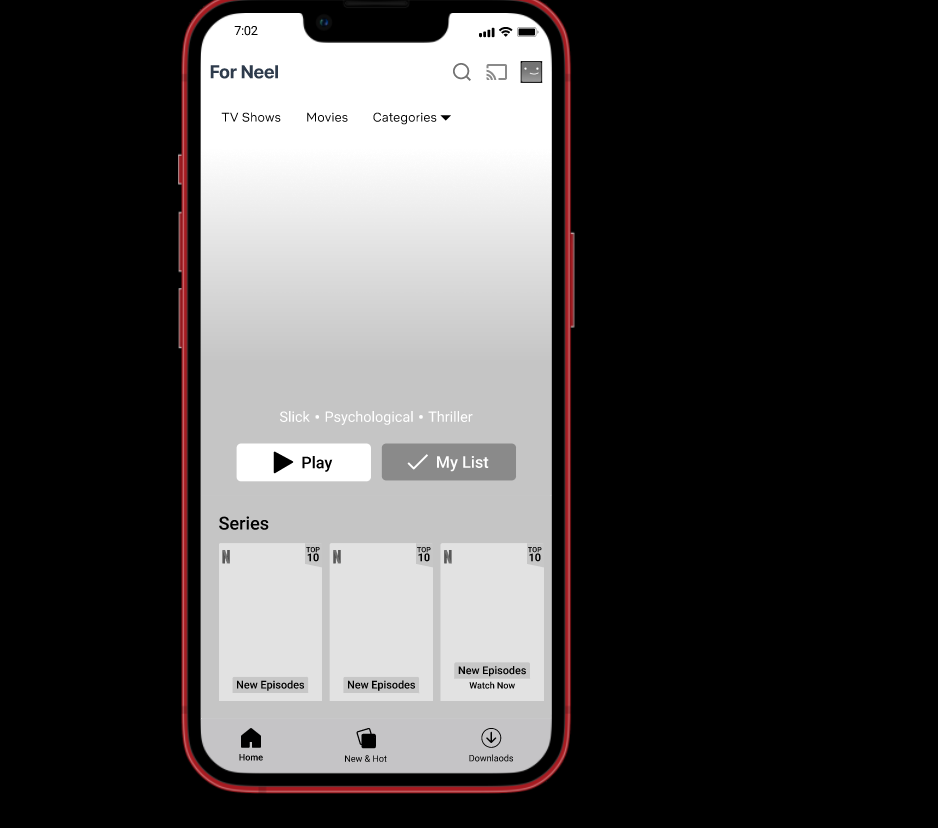
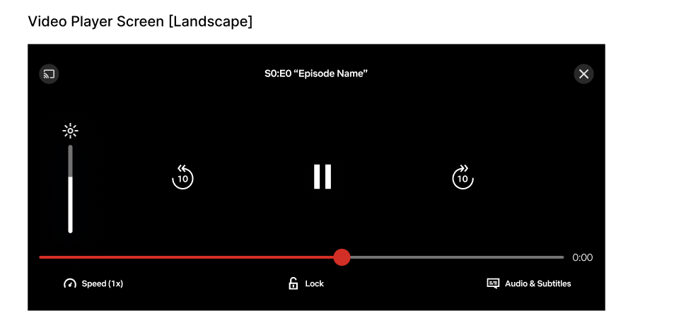
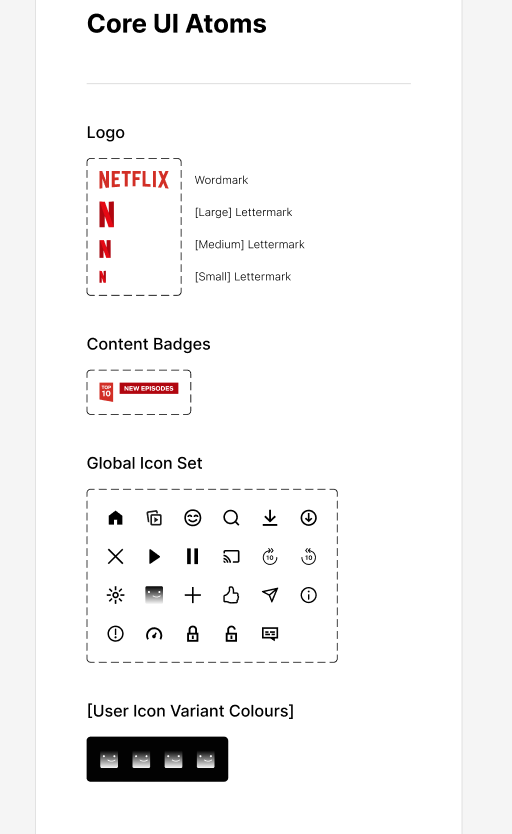

Trabalho de Briefing – Plataforma de Streaming
Apresentar os planos e benefícios do serviço, converter visitantes em assinantes, oferecer experiência personalizada e garantir segurança de dados.
Site transacional focado em Streaming VOD, com autenticação de usuários e integração com sistema de pagamento.
Diversidade de conteúdo, exclusividade, segurança digital, controle parental e navegação intuitiva.
Primário: jovens de 13 a 25 anos. Secundário: adultos de 26 a 40 anos. Terciário: fãs de produções asiáticas e cultura pop.
Streaming sob demanda, perfis personalizados, controle parental, download offline e recomendações inteligentes.
Página inicial dinâmica, sistema de busca, player integrado, área do usuário e central de ajuda.
Campanhas em redes sociais, marketing digital com SEO e tráfego pago, parcerias com influenciadores e divulgação de lançamentos.
Catálogo variado, produções originais e interface moderna.
Alta concorrência, cancelamento de assinaturas e preocupações com privacidade.


